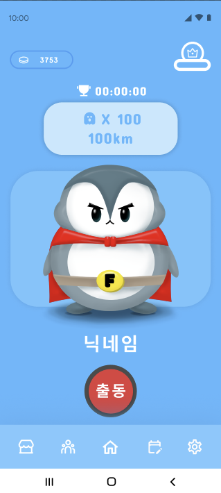
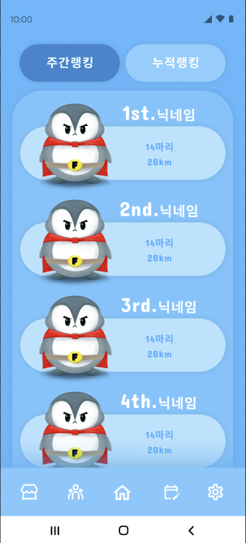
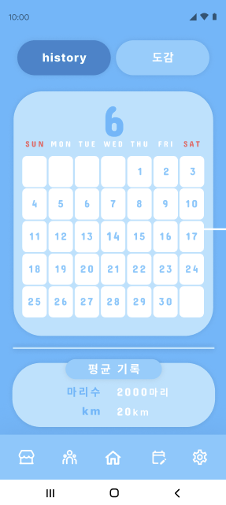
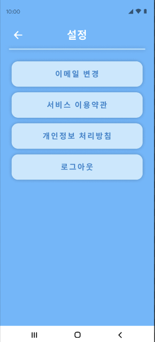
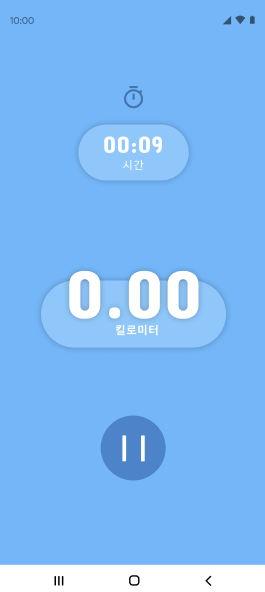
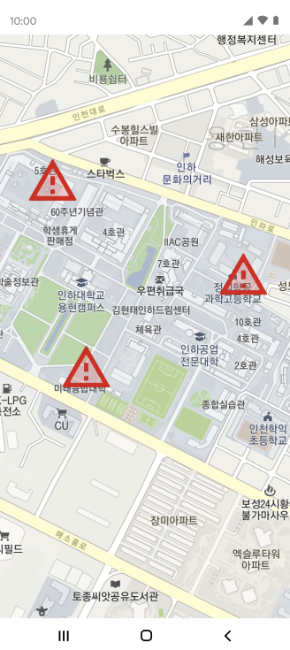
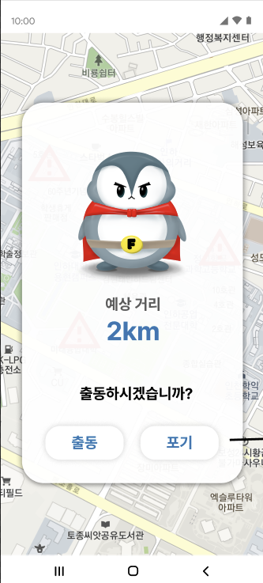
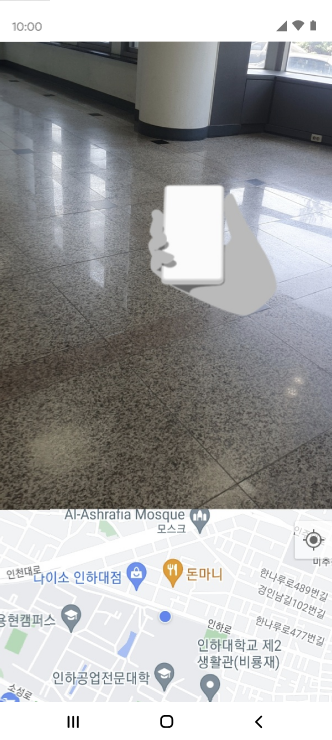

💡 Topic
- 중앙 연합 동아리 UMC 프로젝트
- 조깅을 좀 더 즐겁게 하기 위해 목표를 장소가 아닌 몬스터 포획으로 설정하여 조깅을 즐기기 위한 조깅 앱
- 몬스터를 포켓몬 고와 유사한 AR을 이용한 방식으로 구현하여 사용자의 흥미를 유발
🛠 Tech Stack
Kotlin, Android Studio, GitHub
🧑🏻💻 Team
- PM 1명
- 디자이너 1명
- 안드로이드 개발자 4명
- 웹 백엔드 개발자 3명
🤚🏻 Part
- 역할 : 팀원
- 안드로이드 앱 개발 (front-end part)
- Bottom Navigation View 구현
- 유저 접속 첫 화면인 Home Fragment UI 구성 및 Retrofit2를 통한 API 연동
- 조깅 시 타이머 기능 구현
🤔 Learned
안드로이드의 기초를 익힐 수 있었다.
-
다양한 레이아웃의 특성과 활용법을 익힘
- 예: Linear, Relative, Frame, Grid, Constraint Layout
- 뷰 바인딩과
Intent를 활용하여 XML 파일의 컴포넌트를 다루는 방법 학습 -
API에 대한 개념을 처음 알게 됨
- Front-End와 Back-End에 대한 개념을 구체화
- Retrofit2를 이용하여 API 연동을 해 보면서 RESTful API의 개념을 확립
처음 프로젝트이다 보니 GitHub를 사용해 보면서 협업이 어떤 것인지 알 수 있었다.
- branch에 대한 개념 익힘
git pull,push,clone등 Git을 사용할 때 필요한 다양한 명령어 숙달- 충돌(conflict) 해결 과정을 통해 팀원들과의 협업 능력 배양
📷 Screenshot







